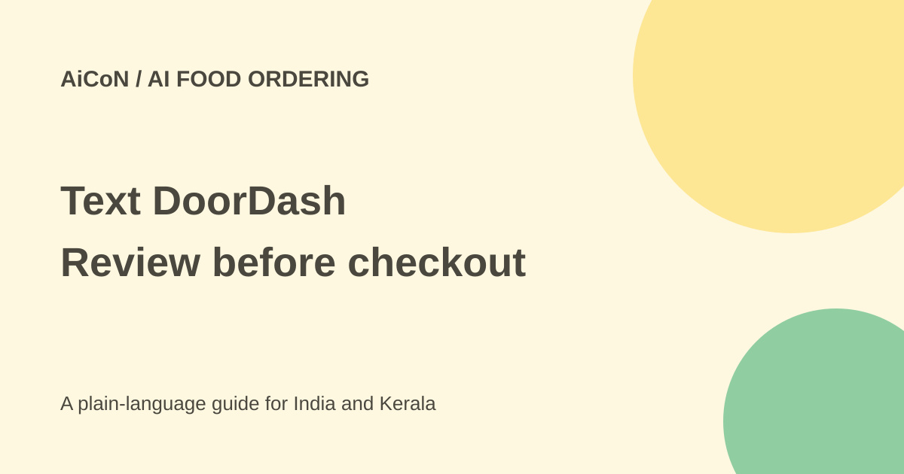

Text DoorDash: AI ordering is a US iOS beta
DoorDash says US iOS users can join a beta waitlist to order by text. It can suggest a cart and remember preferences, but the customer still needs to confirm the order and its cost.

What did DoorDash launch?
DoorDash's 30 September announcement describes ordering through a text conversation. You can request a dish, ask for a local idea or reorder a usual meal. The service searches nearby merchants, reads menus and suggests a cart. It can also show food photos from restaurant pages.
The broader Dash Forward announcement specifies US consumers on iOS joining a beta waitlist. The original post described the Apple Messages experience. It is not a worldwide release, an Android feature or a service confirmed for India.
How a suggested order works
DoorDash says the assistant can learn choices such as modifiers, extra sauce or a usual restaurant. For groups, it can manage different preferences and quantities in one cart. The text-ordering announcement explicitly says the customer confirms the order in the thread before the service manages checkout.
"Order my usual" is convenient shorthand, not a reason to ignore changes. The restaurant may be unavailable, the price may differ, a modifier may be missing or the delivery address may be stale. Review the actual cart each time.
Access and India limits
The official launch invites US users to apply through a waitlist at DoorDash's text page. Joining a list is not an immediate guarantee of beta admission. The pages checked do not give an India launch date or establish that a Kerala customer can place one of these orders.
Use the actual service available at your delivery address. Do not send payment details or an account OTP to an unknown phone number claiming to be the new assistant. Start from DoorDash's official announcement and waitlist route.
Does AI make ordering free?
No. Meals and groceries still involve merchant prices and any delivery, service, tax or other checkout charges. The cited release does not establish a separate universal AI fee or a fee-free order. Check the final amount and cancellation conditions before confirming.
It also describes cheaper grocery swaps, which users can accept or decline before checkout. A cheaper replacement may differ in size, ingredients or dietary suitability. Check what is actually being swapped rather than approving on price alone.
How to use the beta carefully if eligible
- Verify beta access through the official DoorDash route and use the supported device.
- State the dish, quantities, important modifiers and delivery destination clearly.
- Read the suggested restaurant and cart. Check items, sizes, substitutions and availability.
- Confirm allergies directly through the restaurant's appropriate process. An AI preference is not a guarantee against cross-contact.
- Review the total cost, delivery address, timing and cancellation terms.
- Confirm only when the actual order matches what you want. Check the resulting receipt and status.
- Review proactive-message preferences if you do not want reminders about usual orders.
No beta was joined and no order was placed for this guide. These checks explain the announced workflow rather than claiming an account-level test.
What about its performance numbers?
DoorDash reports that Ask DoorDash led users to more than 40,000 new restaurants and that nearly half of its restaurant orders went to places those customers had not tried. The release defines those figures using June-August 2026 orders. They are DoorDash's results, not a promise of better recommendations for every person.
The same launch contains other announcements, including delivery tests and corporate connectors. Those have their own access and geographic conditions. They do not expand the text-ordering beta to India.
For readers in Kerala
This is useful as an example of where food-ordering interfaces are heading. It is not a practical local ordering recommendation yet. If you travel to an eligible US location, check your account and delivery address before relying on the beta for a meal.
Dietary requirements can be more specific than a broad vegetarian or vegan label. Check ingredients and the restaurant's answers, especially for allergies. An assistant remembering a previous order does not replace that review.
What changed since the original post?
The archive post already said US waitlist and no India availability. This guide adds the official in-thread confirmation step, distinguishes waitlist from admission, and explains ordinary order costs and substitution checks. It does not turn "no app" marketing into no review or no account requirements.
Frequently asked questions
Can I use it in India now?
The cited sources do not establish India availability; the launch is a US iOS beta.
Does it place an order without confirmation?
The announcement describes confirming inside the text thread.
Are usual preferences always correct?
No. Check the live cart and delivery details.
Is it free food?
No. Normal order costs still apply.
Sources: Official text-ordering announcement · US iOS rollout and related products. Checked 7 October 2026.